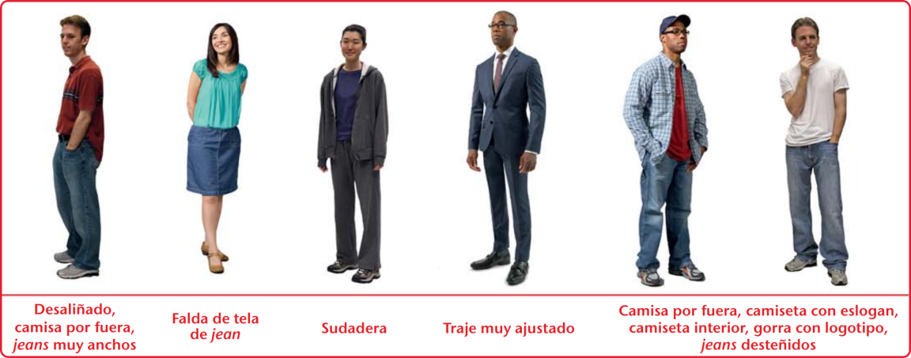
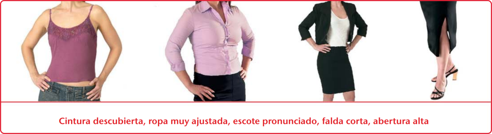

INACEPTABLE PARA VISITAR BETEL
LA ROPA DEMASIADO INFORMAL NO ES ACEPTABLE EN BETEL
“Se ha observado que algunos hermanos y hermanas tienden a llevar ropa demasiado informal cuando visitan las sucursales, lo cual no es apropiado. Debemos ser ejemplares e ir bien arreglados y vestidos con modestia. Nuestra apariencia debe reflejar la decencia y dignidad propias de los siervos de Jehová Dios (1 Tim. 2:9, 10)” (Nuestro Ministerio del Reino de junio de 2002, pág. 2).


